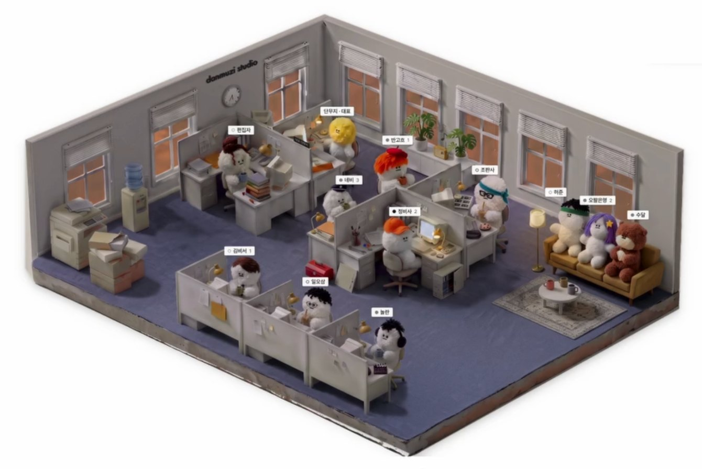

대표님 기준으로 일하는 AI 경영실, 대표님 컴퓨터에
같은 AI, 다른 결과.
차이는 AI가 무엇을 읽느냐에서 납니다.
대표님의 기준을 먼저 읽는 경영실과 전담팀을 세웁니다.
다시 설명하지 않습니다. 한 번 적은 판단 기준을 경영실이 기억합니다. 새 대화도 거기서 시작합니다.
일일이 챙기던 첫 판은 팀이 씁니다. 자료 정리와 보고서·레터 첫 판을 전담팀이 먼저 만들어 둡니다.
대표님의 시간은 결정에. 보낼지, 바꿀지, 멈출지는 대표님이 정합니다.

AI를 써도 매번 우리 회사 이야기부터 다시 적어야 한다
경영실이 판단 기준·고객·상품을 기억합니다. 새 대화도 쌓인 기준을 읽고 시작합니다.
자료 정리하고 보고서 쓰다 하루가 간다
자료 정리와 보고서·레터 첫 판은 전담팀이 먼저 만듭니다. 결정과 근거는 경영실에 기록으로 남습니다.
AI가 무엇을 내보낼지 몰라 맡기기 어렵다
메일·메신저·결제는 처음부터 연결하지 않습니다. 저절로 되는 일은 기록과 멈춤 둘이고, 내보내는 손은 대표님입니다.
쌓아 둔 것이 플랫폼 안에 흩어져 있다
기준과 기록이 대표님 컴퓨터의 파일로 남습니다. 대표님 소유입니다.
돈·마케팅·전략 판단을 함께 놓는 경영 파트너. 판단 틀은 공개 경영 자료 27종에서 지었습니다.
대표님의 글과 기록을 읽습니다. 새 대화도 지난 맥락에서 시작합니다.
초안까지 만듭니다. 내보낼지는 대표님이 정합니다.
| AI 모델만 쓸 때 | 디퍼 경영실 | |
|---|---|---|
| 기억 | 창을 열 때마다 처음부터 설명 | 쌓인 기준을 읽고 시작 |
| 판단 | 그럴듯한 일반론 | 대표님 원칙에 닿는지 먼저 검토 |
| 결과 | 대화로 끝남 | 결정 기록·초안·전담팀 업무로 남음 |
| 바깥으로 나가는 일 | 사람이 매번 가려야 함 | 그 앞에서 멈추고 대표님께 물음 |
| 자산 | 플랫폼의 대화 기록 | 대표님 컴퓨터의 파일 · 대표님 소유 |
업무를 고객·납품·돈·알리기 네 갈래로 나눠, 에이전트에 맡길 일과 대표님 결정으로 남길 일을 가릅니다.
우선순위·거절 기준·승인 지점을 기준 문서 한 장으로 설계합니다. 팀 전원이 이 문서를 먼저 읽고 일합니다.
경영실·세컨브레인·업종 전담팀을 대표님 컴퓨터에 구축하고, 실제 업무 한 건으로 검증합니다. 바깥으로 나가는 일 앞에서 멈추는지 함께 확인합니다.
정기 점검과 월간 보고로 팀을 돌봅니다. 일감이 자리 잡으면 다음 일감을 더합니다. 값은 첫 대화에서 말씀드립니다.
다른 AI 서비스와 견주어 보기
분야마다 잘하는 AI 서비스가 있습니다. 디퍼는 같은 모델 위에 대표님의 판단 기준을 먼저 놓습니다.
작업 도구 — Claude Code · Codex
*왼쪽은 분야별로 널리 쓰이는 서비스의 예시입니다. 디퍼가 그 서비스를 대신한다는 뜻은 아닙니다.